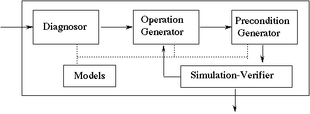

概要
プラントに関するモデルからプラント運転制御知識(IF-THENルール)をコンパ イルすることができるシステム。
目的
本システムは火力発電プラントの運転性御を対象に、モデルベース推論技術の 有効性を実証することを目的とする。
構成

機能
- (1)定性因果モデルと徴候クラスタリングによる診断 (Diagnosor)
- (2)機器モデルと運転原則モデルによる運転制御知識のコンパイル
- - 対策操作の導出 (Operation Generator)
- - 操作条件の生成 (Precondition Generator)
- (3)動的特性モデルによるコンパイル知識の検証 (Simulation-Verifier)
ＦＴＰ
- 制御用エキスパートシステム [421K]

www-admin@icot.or.jp